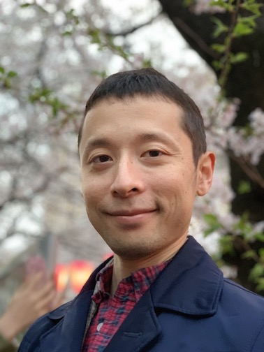
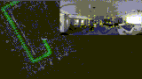
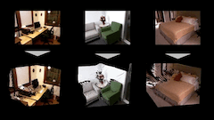
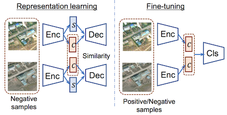
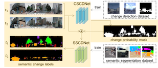
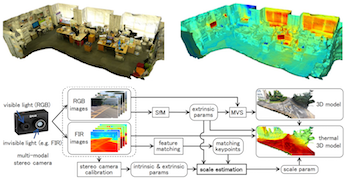
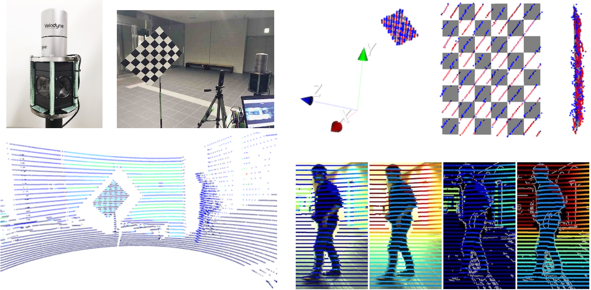
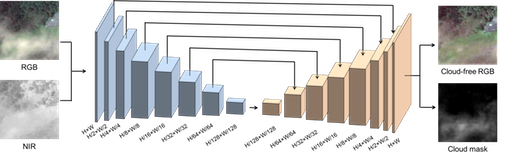

<!DOCTYPE html>
<!-- saved from url=(0034)http://www.cs.toronto.edu/~slwang/ -->
<html><div class="oneNoteWebClipperIsInstalledOnThisBrowser" style="display: none;"></div><head><meta http-equiv="Content-Type" content="text/html; charset=UTF-8">

<title>Ken Sakurada</title>
<link href="./src/gly.css" rel="stylesheet" type="text/css">

<script type="text/javascript" async="" src="./src/ga.js"></script><script type="text/javascript" async="" src="./src/ga(1).js"></script><script type="text/javascript">

  var _gaq = _gaq || [];
  _gaq.push(['_setAccount', 'UA-543380-2']);
  _gaq.push(['_trackPageview']);

  (function() {
    var ga = document.createElement('script'); ga.type = 'text/javascript'; ga.async = true;
    ga.src = ('https:' == document.location.protocol ? 'https://ssl' : 'http://www') + '.google-analytics.com/ga.js';
    var s = document.getElementsByTagName('script')[0]; s.parentNode.insertBefore(ga, s);
  })();

</script>
</head>

<body>

<div class="container"> 
    <div style="text-align: right;">
    <a href="./index_ja.html">Japanese</a> / English
  </div>    
    <table width="95%" border="0" align="center">
      <tbody><tr>
        <td width="20%"><div align="center"></div></td>
        <td width="80%"><div align="center">
          <table width="110%" border="0">
            <tbody><tr>
            <td width="10%" height="0" valign="top"></td>
            <td width="81%" valign="top">
              <table width="79%" border="0" align="left">
                <tbody><tr>
                  <td align="left"><span class="textpageheader">Ken Sakurada</span></td>
                </tr>
              </tbody></table></td>
            </tr>
            <tr>
                <td width="10%" height="55" valign="top"> </td>
                <td width="200%" valign="top">
                <p style="line-height:120%">
                  <a href="https://www.aist.go.jp/index_en.html">National Institute of Advanced Industrial Science and Technology (AIST) </a><br>
                  <a href="https://www.airc.aist.go.jp/en/">Artificial Intelligence Research Center (AIRC)</a> <br>   Senior Researcher <br>
                </p>
            <p style="line-height:120%">
            <a href="https://dena.com/intl/"> DeNA </a> <br> Computer Vision Technical Fellow <br>
                  </p>
              </tr>
                <tr>
            <td width="12%" height="20" valign="top"> Address:</td>
            <td width="150%" valign="top">
                2-4-7 Aomi, Koto-ku, Tokyo 135-0064
          </tr>
          <tr>
            <td height="1">&nbsp Email:</td>
            <td>sakurada.aist at gmail.com </td>
          </tr>
          <td width="10%" height="10"> </a></td>
          <td ><a href="./document/CV_sakurada.pdf">[Curriculum Vitae]</a></td>
          <td> </td>
         </tbody></table>
        </div></td>
        <td width="10%"><div align="center">
          <table width="100%" border="0">
          </table>
        </div></td>
      </tr>
  </tbody></table>
<hr>
<p><br>
  I am a senior researcher at <a href="http://www.airc.aist.go.jp/en/">Artificial Intelligence Research Center (AIRC)</a>, <a href="http://www.aist.go.jp/index_en.html">National Institute of Advanced Industrial Science and Technology (AIST) </a> since April 2018. 
  My general research interest lies in computer vision and robotics (SLAM, 4D Modeling). 
  <!--I accept students who already obtained or bring to apply <a href="http://www.mext.go.jp/a_menu/koutou/ryugaku/boshu/1346643.htm"> MEXT</a> scholarship. Please send your resume.<br></p>
  -->
<p class="textsectionheader2">News</p>
<hr>
<p>
</p><ul type="SQUARE">
</li><li>One paper has been accepted to ACM Multimedia 2019 Open Source Software Competition (OSSC). "OpenVSLAM: a Versatile Visual SLAM Framework"</a>. <a href="https://drive.google.com/open?id=1IJJbaiyYcmPPJ33C4HQS-k9KS3c6cqgo">[Preprint]</a> <a href="https://github.com/xdspacelab/openvslam">[Github]</a>
</li><li>We released the open source of Visual SLAM <a href="https://github.com/xdspacelab/openvslam"><i>OpenVSLAM</i></a> </a>. <a href="https://github.com/xdspacelab/openvslam">[Github]</a>
</li><li>One paper has been accepted to CVPR 2019. "Rare Event Detection using Disentangled Representation Learning"</a>. <a href="https://arxiv.org/abs/1811.11985">[arXiv]</a>
</li><li>One paper has been accepted to ACCV 2018. "Scale Estimation of Monocular SfM for a Multi-modal Stereo Camera"</a>. <a href="https://arxiv.org/abs/1810.11856">[arXiv]</a>
</li><li>One paper has been accepted to Remote Sensing. <a href="http://www.mdpi.com/2072-4292/9/8/851">"Reflectance Intensity Assisted Automatic and Accurate Extrinsic Calibration of 3D LiDAR and Panoramic Camera Using a Printed Chessboard"</a>. <a href="https://arxiv.org/abs/1708.05514">[arXiv]</a>
</li><li>We released the source code of Intensity-based Lidar Camera Calibration (ILCC).  <a href="https://github.com/mfxox/ILCC">[GitHub]</a>
</li><li>One paper has been accepted to CVPR Workshop Earth Vision 2017 Workshop. "Filmy Cloud Removal on Satellite Imagery with Multispectral Conditional Generative Adversarial Nets"</a>. <a href="./document/cvprw2017.pdf">[Paper]</a>
</li><li>One paper has been accepted to The Fifteenth IAPR International Conference on Machine Vision Applications (MVA2017). "Damage Detection from Aerial Images via Convolutional Neural Networks"</a>. <a href="./document/mva2017.pdf">[Paper]</a>
</li><li>One paper has been accepted to Computer Vision and Image Understanding （CVIU）. <a href="http://www.sciencedirect.com/science/article/pii/S1077314217300280">[Paper]</a> <a href="./document/Temporal City Modeling using Street Level Imagery.pdf">[Pre-print]</a>
</li><li>One paper has been accepted to Remote Sensing. <a href="http://www.mdpi.com/2072-4292/8/11/967">"Incremental and Enhanced Scanline-Based Segmentation Method for Surface Reconstruction of Sparse LiDAR Data"</a>.

</li></ul>
<p></p> 
<p class="textsectionheader2">Projects</p><hr>
<table width="100%" border="0">
  <tbody>

    <tr>
      <td width="26%"></td>
      <td width="4%"> </td>
      <td width="68%"><p class="papertext"><strong>
        OpenVSLAM: a Versatile Visual SLAM Framework </strong><br>
        Shinya Sumikura, Mikiya Shibuya, <strong><a href="https://kensakurada.github.io/index_ja.html">Ken Sakurada</a></strong><br>
        <a href="https://drive.google.com/open?id=1IJJbaiyYcmPPJ33C4HQS-k9KS3c6cqgo">[Preprint]</a> <a href="https://github.com/xdspacelab/openvslam">[Github]</a> </p></td>
      <td>&nbsp;</td>
    </tr>

    <tr>
      <td width="26%"></td>
      <td width="4%"> </td>
      <td width="68%"><p class="papertext"><strong>
        MeshDepth: Disconnected Mesh-based Deep Depth Prediction </strong><br>
        Masaya Kaneko, <strong><a href="https://kensakurada.github.io/index_ja.html">Ken Sakurada</a></strong>, Kiyoharu Aizawa<br>
        arXiv<br>
              <a href="https://arxiv.org/abs/1905.01312">[arXiv]</a> <a href="https://meshdepth.github.io/">[Project]</a> [Code] [Dataset] </p></td>
      <td>&nbsp;</td>
    </tr>

    <tr>
      <td width="26%"></td>
      <td width="4%"> </td>
      <td width="68%"><p class="papertext"><strong>
        Rare Event Detection using Disentangled Representation Learning </strong><br>
        Ryuhei Hamaguchi, <strong><a href="https://kensakurada.github.io/index_ja.html">Ken Sakurada</a></strong>, Ryosuke Nakamura <br>
        CVPR 2019<br>
              <a href="https://arxiv.org/abs/1812.01285">[arXiv]</a> [Code] [Dataset]</p></td>
      <td>&nbsp;</td>
    </tr>

    <tr>
      <td width="26%"></td>
      <td width="4%"> </td>
      <td width="68%"><p class="papertext"><strong>
        Weakly Supervised Silhouette-based Semantic Change Detection </strong><br>
        <strong><a href="https://kensakurada.github.io/index_ja.html">Ken Sakurada</a></strong> <br>
        arXiv<br>
              <a href="https://arxiv.org/abs/1811.11985">[arXiv]</a> [Project] [Code] [Dataset] </p></td>
      <td>&nbsp;</td>
    </tr>

    <tr>
      <td width="26%"></td>
      <td width="4%"> </td>
      <td width="68%"><p class="papertext"><strong>
        Scale Estimation of Monocular SfM for a Multi-modal Stereo Camera</strong><br>
        Shinya Sumikura, <strong><a href="https://kensakurada.github.io/index_ja.html">Ken Sakurada</a></strong> Nobuo Kawaguchi and Ryosuke Nakamura<br>
        ACCV 2018<br>
              <a href="https://arxiv.org/abs/1810.11856">[arXiv]</a><a href="https://t.co/gxYp2SIWl7">[Movie]</a> </p></td>
      <td>&nbsp;</td>
    </tr>

    <tr>
    <td width="26%"></td>
    <td width="4%"> </td>
    <td width="68%"><p class="papertext"><strong>Reflectance Intensity Assisted Automatic and Accurate Extrinsic Calibration of 3D LiDAR and Panoramic Camera Using a Printed Chessboard</strong><br>
      Weimin Wang, <strong><a href="http://www.ucl.nuee.nagoya-u.ac.jp/~sakurada/">Ken Sakurada</a></strong> and Nobuo Kawaguchi<br>
      Remote Sensing 2017, 9(8)<br>
            <a href="http://www.mdpi.com/2072-4292/9/8/851">[Paper]</a> <a href="https://github.com/mfxox/ILCC">[GitHub]</a> </p></td>
    <td>&nbsp;</td>
  </tr>

    <tr>
    <td width="26%"></td>
    <td width="4%"> </td>
    <td width="68%"><p class="papertext"><strong>Filmy Cloud Removal on Satellite Imagery with Multispectral Conditional Generative Adversarial Nets</strong><br>
      Kenji Enomoto, <strong><a href="http://www.ucl.nuee.nagoya-u.ac.jp/~sakurada/">Ken Sakurada</a></strong>, Weimin Wang, Hiroshi Fukui, Masashi Matsuoka, Ryosuke Nakamura and Nobuo Kawaguchi<br>
      Conference on Computer Vision and Pattern Recognition Workshop (CVPRW) EARTHVISION 2017<br>
            <a href="./document/cvprw2017.pdf">[Paper]</a> </p></td>
    <td>&nbsp;</td>
  </tr>

    <tr>
    <td width="26%"></td>
    <td width="4%"> </td>
    <td width="68%"><p class="papertext"><strong>Damage Detection from Aerial Images via Convolutional Neural Networks</strong><br>
      Aito Fujita, <strong><a href="http://www.ucl.nuee.nagoya-u.ac.jp/~sakurada/">Ken Sakurada</a></strong>, Tomoyuki Imaizumi, Riho Ito, Shuhei Hikosaka, Ryosuke Nakamura<br>
      IAPR International Conference on Machine Vision and Applications (MVA) 2017<br>
            <a href="./document/mva2017.pdf">[Paper]</a> </p></td>
    <td>&nbsp;</td>
  </tr>

    <tr>
    <td width="26%"></td>
    <td width="4%"> </td>
    <td width="68%"><p class="papertext"><strong>Incremental and Enhanced Scanline-Based Segmentation Method for Surface Reconstruction of Sparse LiDAR Data</strong><br>
      Weimin Wang, <strong><a href="http://www.ucl.nuee.nagoya-u.ac.jp/~sakurada/">Ken Sakurada</a></strong> and Nobuo Kawaguchi<br>
      Remote Sensing 2016, 8(11)<br>
            <a href="http://www.mdpi.com/2072-4292/8/11/967">[Paper]</a> </p></td>
    <td>&nbsp;</td>
  </tr>

    <tr>
    <td width="26%"></td>
    <td width="4%"> </td>
    <td width="68%"><p class="papertext"><strong>Change Detection from a Street Image Pair using CNN Features and Superpixel Segmentation</strong><br>
      <strong><a href="http://www.ucl.nuee.nagoya-u.ac.jp/~sakurada/">Ken Sakurada</a></strong> and Takayuki Okatani</a><br>
      BMVC, 2015<br>
            <a href="./document/71-Sakurada-BMVC15.pdf">[Paper]</a> <a href="./document/71-Sakurada-BMVC15_supplementary.pdf">[Supplementary]</a>  <a href="https://scholar.googleusercontent.com/scholar.bib?q=info:3Yf83QjLJYQJ:scholar.google.com/&output=citation&scisig=AAGBfm0AAAAAWE9oQEcyZoj6583aghm9s-icM7N6D7OJ&scisf=4&ct=citation&cd=-1&hl=ja">[Bibtex(BIB)]</a>
            <a href="http://www.vision.is.tohoku.ac.jp/us/research/4d_city_modeling/pano_cd_dataset/">[Dataset]</p></td>
    <td>&nbsp;</td>
  </tr>

    <tr>
    <td width="26%"></td>
    <td width="4%"> </td>
    <td width="68%"><p class="papertext"><strong>Massive City-scale Surface Condition Analysis using Ground and Aerial Imagery</strong><br>
      <strong><a href="http://www.ucl.nuee.nagoya-u.ac.jp/~sakurada/">Ken Sakurada</a></strong>,  Takayuki Okatani and <a href="http://www.cs.cmu.edu/~kkitani/">Kris M. Kiatani</a><br>
      ACCV, 2014 (Oral), <strong>"Best Application Paper Honorable Mention Award"</strong> <br>
            <a href="./document/68-Sakurada-ACCV14.pdf">[Paper]</a> <a href="https://scholar.googleusercontent.com/scholar.bib?q=info:3Yf83QjLJYQJ:scholar.google.com/&output=citation&scisig=AAGBfm0AAAAAWE9oQEcyZoj6583aghm9s-icM7N6D7OJ&scisf=4&ct=citation&cd=-1&hl=ja">[Bibtex(BIB)]</a></p></td>
    <td>&nbsp;</td>
  </tr>

    <tr>
    <td width="26%"></td>
    <td width="4%"> </td>
    <td width="68%"><p class="papertext"><strong>Detecting Changes in 3D Structure of a Scene from Multi-view Images Captured by a Vehicle-mounted Camera</strong><br>
      <strong><a href="http://www.ucl.nuee.nagoya-u.ac.jp/~sakurada/">Ken Sakurada</a></strong>,  Takayuki Okatani and Koichiro Deguchi</a><br>
      CVPR, 2013 <br>
            <a href="./document/66-Sakurada-CVPR13.pdf">[Paper]</a> <a href="https://scholar.googleusercontent.com/scholar.bib?q=info:fMAo1Gq_sHAJ:scholar.google.com/&output=citation&scisig=AAGBfm0AAAAAWE9qPUuNT2IanI080U_NtZkoAXaDSmqZ&scisf=4&ct=citation&cd=-1&hl=ja">[Bibtex(BIB)]</a>
            <a href="http://www.vision.is.tohoku.ac.jp/us/research/4d_city_modeling/detecting-structural-scene-changes/">[Project]</a>
            <a href="http://www.vision.is.tohoku.ac.jp/us/research/4d_city_modeling/chg_dataset/">[Dataset]</a></p></td>

    <td>&nbsp;</td>
  </tr>


 
</tbody></table> 
<br>


<p class="textsectionheader2">Main Publications</p>
<hr>
Journal Articles
<ul>
<li>Weimin Wang, <strong><a href="https://kensakurada.github.io/index_ja.html">Ken Sakurada</a></strong> and Nobuo Kawaguchi，<br>
  <strong>Reflectance Intensity Assisted Automatic and Accurate Extrinsic Calibration of 3D LiDAR and Panoramic Camera Using a Printed Chessboard</strong>，
    <br>Remote Sensing 2017, 9(8)</li> <a href="http://www.mdpi.com/2072-4292/9/8/851">[Paper]</a><a href="https://arxiv.org/abs/1708.05514">[arXiv]</a><a href="https://github.com/mfxox/ILCC">[GitHub]</a>
</li>

<li><strong><a href="https://kensakurada.github.io/index_ja.html">Ken Sakurada</a></strong>, Daiki Tetsuka and Takayuki Okatani，<br>
<strong>Temporal city modeling using street level imagery</strong>，
      <br>Computer Vision and Image Understanding(CVIU) </li> <a href="http://www.sciencedirect.com/science/article/pii/S1077314217300280">[Paper]</a> <a href="./document/Temporal City Modeling using Street Level Imagery.pdf">[Pre-print]</a>
</li>
<li>Weimin Wang, <strong><a href="https://kensakurada.github.io/index_ja.html">Ken Sakurada</a></strong> and Nobuo Kawaguchi，<br>
<strong>Incremental and Enhanced Scanline-Based Segmentation Method for Surface Reconstruction of Sparse LiDAR Data</strong>，
      <br>Remote Sensing 2016, 8(11)</li> <a href="http://www.mdpi.com/2072-4292/8/11/967">[Paper]</a> 
</li>

<li><strong><a href="https://kensakurada.github.io/index_ja.html">Ken Sakurada</a></strong> Takayuki Okatani and Kris M. Kitani，<br>
<strong>Hybrid Macro-Micro Visual Analysis</strong>，
      <br>Computer Vision and Image Understanding(CVIU), Vol.146, May 2016, pages 86-98</li> <a href="http://www.sciencedirect.com/science/article/pii/S1077314216000710">[Paper]</a> 
</li>
</ul><br clear="all"><p class="posted"> </p>


Conference Papers
<ul>
    <li>Ryuhei Hamaguchi, <strong><a href="https://kensakurada.github.io/index_ja.html">Ken Sakurada</a></strong>, Ryosuke Nakamura<br>
  <strong>Rare Event Detection using Disentangled Representation Learning</strong>，
      <br>CVPR, 2019
</li> 
<li>Shinya Sumikura, <strong><a href="https://kensakurada.github.io/index_ja.html">Ken Sakurada</a></strong>, Nobuo Kawaguchi, Ryosuke Nakamura<br>
<strong>Scale Estimation of Monocular SfM for a Multi-modal Stereo Camera</strong>，
    <br>The 14th Asian Conference on Computer Vision (ACCV), 2018
</li>    
<li>Kenji Enomoto, <strong><a href="https://kensakurada.github.io/index_ja.html">Ken Sakurada</a></strong>, Weimin Wang, Nobuo Kawaguchi, Masashi Matsuoka, Ryosuke Nakamura<br>
<strong>IMAGE TRANSLATION BETWEEN SAR AND OPTICAL IMAGERY WITH GENERATIVE ADVERSARIAL NETS</strong>，
    <br>IEEE International Geoscience and Remote Sensing Symposium (IGARSS), 2018
</li>    
<li>Kenji Enomoto, <strong><a href="https://kensakurada.github.io/index_ja.html">Ken Sakurada</a></strong>, Weimin Wang, Hiroshi Fukui, Masashi Matsuoka, Ryosuke Nakamura and Nobuo Kawaguchi<br>
  <strong>Filmy Cloud Removal on Satellite Imagery with Multispectral Conditional Generative Adversarial Nets</strong>，
      <br>CVPRW EARTHVISION, 2017 <a href="./document/cvprw2017.pdf">[Paper]</a> 
</li>
<li>Aito Fujita, <strong><a href="https://kensakurada.github.io/index_ja.html">Ken Sakurada</a></strong>, Tomoyuki Imaizumi, Riho Ito, Shuhei Hikosaka and Ryosuke Nakamura<br>
  <strong>Damage Detection from Aerial Images via Convolutional Neural Networks</strong>，
      <br>MVA, 2017 <a href="./document/mva2017.pdf">[Paper]</a> 
</li>    
<li><strong><a href="https://kensakurada.github.io/index_ja.html">Ken Sakurada</a></strong> and Takayuki Okatani<br>
<strong>Change Detection from a Street Image Pair using CNN Features and Superpixel Segmentation</strong>，
      <br>BMVC, 2015 <a href="./document/71-Sakurada-BMVC15.pdf">[Paper]</a> <a href="./document/71-Sakurada-BMVC15_supplementary.pdf">[Supplementary]</a>  <a href="https://scholar.googleusercontent.com/scholar.bib?q=info:3Yf83QjLJYQJ:scholar.google.com/&output=citation&scisig=AAGBfm0AAAAAWE9oQEcyZoj6583aghm9s-icM7N6D7OJ&scisf=4&ct=citation&cd=-1&hl=ja">[Bibtex(BIB)]</a>
      <a href="http://www.vision.is.tohoku.ac.jp/us/research/4d_city_modeling/pano_cd_dataset/">[Dataset]</p></td>
</li>
<li><strong><a href="https://kensakurada.github.io/index_ja.html">Ken Sakurada</a></strong>, Takayuki Okatani and Kris M. Kiatani<br>
<strong>Massive City-scale Surface Condition Analysis using Ground and Aerial Imagery</strong>，
      <br>ACCV, 2014 (Oral), <span style="background-color:#ffcc99"><strong>"Best Application Paper Honorable Mention Award"</strong></span> <a href="./document/68-Sakurada-ACCV14.pdf">[Paper]</a> 
</li>
<li><strong><a href="https://kensakurada.github.io/index_ja.html">Ken Sakurada</a></strong>, Takayuki Okatani and Koichiro Deguchi<br>
<strong>Detecting Changes in 3D Structure of a Scene from Multi-view Images Captured by a Vehicle-mounted Camera</strong>，
      <br>CVPR, 2013 <a href="./document/66-Sakurada-CVPR13.pdf">[Paper]</a> 
</li>

</ul><br clear="all"><p class="posted"> </p>


<p class="textsectionheader2">HONORS AND AWARDS</p>
<hr>
<ul>
<li><span style="font-size: medium;">MIRU2015 Frontier Award</span></li>
<li><span style="font-size: medium;">ACCV2014 Best Application Paper Honorable Mention Award</span></li>
<li><span style="font-size: medium;">SII2010 Best Paper Award Finalist</span></li>
<li><span style="font-size: medium;">Graduation Honor, Mechanical Major in Graduate School of Information Science, Tohoku University, 2010</span></li>
<li><span style="font-size: medium;">Second Place of Rescue Robot League of RoboCup World 2009 (Team: Pelican United)</span></li>
<li><span style="font-size: medium;">Eiji Muto Student Award, Japan Society for Design Engineering, 2008</span></li>
</ul><br clear="all"><p class="posted"> </p>

<p class="textsectionheader2">Grants</p>
<hr>
<ul>
<li><span style="font-size: medium;">Grant-in-Aid for Scientific Research (KAKENHI) Grant-in-Aid for Young Scientists, 2018 - present (PI) </span></li>
<li><span style="font-size: medium;">New Energy and Industrial Technology Development Organization (NEDO), 2017 (Co-Investigator) </span></li>
<li><span style="font-size: medium;">The Horikagakugeijutsu Foundation for Informational Science Advancement Research Grant, 2017 - present (PI)</span></li>
<li><span style="font-size: medium;">JSPS Research Fellowship for Young Scientists (JSPS DC2), 2013 - 2015 (PI)</span></li>
</ul><br clear="all"><p class="posted"> </p>

<p class="textsectionheader2">Services</p>
<hr>
<ul>
<li><span style="font-size: medium;">Organizing Committee Member of IAPR International Conference on Machine Vision and Applications (MVA2017)</span></li>
<li><span style="font-size: medium;">Reviewer of TPAMI, CVIU, Remote Sensing, AURO, Advanced Robotics, CVA, ICPR, MVA, ...
</ul><br clear="all"><p class="posted"> </p>


</div></body></html>